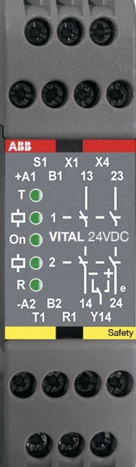

السيفتي PLC · الدرس 9 من 13
يحل الـ Vital 1 مشكلة: لديك 10 أبواب و5 طوارئ على الماكينة. بالـ RT9 تحتاج إلى 15 ريلاي. أما بالـ Vital 1 فتوصّلها كلها على التوالي بسلك واحد وتبقى PL e.
بدل 24V ثابت، يُخرج الـ Vital نبضات من طرف T1، تمر على كل الحساسات واحدًا تلو الآخر، وتعود على طرف R1.
الحساس المغلق يقلب النبضات ويرسلها للحساس التالي. وإذا فُتح حساس توقفت النبضات وفصل الـ Vital. وإذا حدث قصر على حساس تغيّر عدد القلبات وفصل الـ Vital أيضًا.
الحساس قطعتان. Adam يُركّب على الإطار، وفيه الإلكترونيات والمصباح وفيشة M12. وEva تُركّب على الباب دون سلك، وتعمل على مسافة 0–15 مللي.
ومصباح Adam يخبرك بالحالة. أخضر: الباب مغلق والإشارة واصلة. أحمر: هذا الباب مفتوح. يومض أحمر وأخضر: الباب مغلق، لكن هناك شيء مفتوح قبله.
مثال بـ 3 أبواب: فتحت الباب 2، فيصبح Adam 2 أحمر ويومض Adam 3. عرفت الباب دون أن تفتح علبة.
وكل Adam يقلب الإشارة مرة. إذا كان عدد القلبات فرديًا (3 أبواب، أو 4 أبواب وطوارئ) فاترك S1 فارغًا. وإذا كان زوجيًا فوصّل S1 مع B1، وإلا يبقى مصباح R مطفأً.
يمكنك توصيل حتى 30 Adam DYN على Vital 1 واحد، مع بقاء PL e.

على واجهة الجهاز: T، و1، وOn، و2، وR.
الريست اليدوي المراقَب: زر بين B1 وX1، ومكانه خارج منطقة الخطر مع رؤيتها. والريست الأوتوماتيك: بريدج بين B1 وX1 وX4.
تلامسات الـ NC في الكونتاكتورات بين B1 وX1 على التوالي مع الريست. والفصل يستغرق أقل من 48 ms.
اضغط الطوارئ أو افتح بابًا وشاهد أين ينقطع التيار، ثم أعد كل شيء واضغط RESET. أو اضغط «شاهد المثال».
أجب إجابة صحيحة عن 7 من 8 على الأقل ليُسجَّل الدرس مكتملًا.
الأرقام والأطراف هنا من كتالوجات ABB (Pluto Hardware Manual وProgramming Manual وRT9). قبل التطبيق على ماكينة حقيقية ارجع إلى الكتالوج وتقييم المخاطر الخاص بالماكينة. يُحفظ تقدّمك على هذا الجهاز فقط.
© LearnElectricals